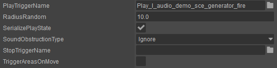
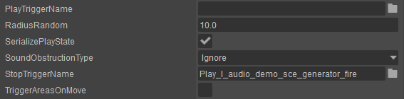
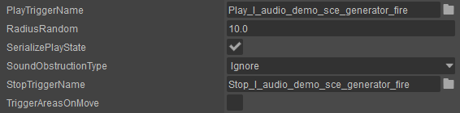
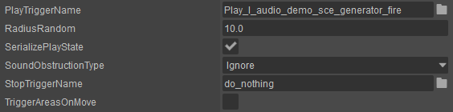

Overview
Within most places of CRYENGINE's audio system you have the possibility to define both a PlayTrigger and a StopTrigger.
The following tutorial explains the behavior of the PlayTrigger and StopTrigger implementation.
Main Content
Just the PlayTrigger is Set
On activation this executes the PlayTrigger and on deactivation stops the instance of the PlayTrigger.
The audio system automatically stops the PlayTrigger when the corresponding StopTrigger has not been assigned.
This functionality can be very useful as it automatically stops sounds without the need to create any additional stop functionality inside of your audio middleware. This also ensures that any looping sounds will be stopped when the Entity is disabled. 
Just the StopTrigger is Set
As no audio system Trigger is defined under the PlayTrigger nothing will happen when the PlayTrigger is executed. However, as a Trigger is set for the StopTrigger it will be played when the StopTrigger is executed.

The PlayTrigger and StopTrigger are both Set
This will execute the audio system Trigger once the PlayTrigger it is defined in is executed. However, when the StopTrigger is executed the instance of the PlayTrigger won't be stopped because the audio system Trigger has been defined as a StopTrigger.
If you need to stop the PlayTrigger with another audio system Trigger that is set as a StopTrigger, you would have to setup the stop functionality inside of your audio middleware.

Example: For an electric generator you would setup a start-up and loop sound on the PlayTrigger that is executed when the Entity is activated.
When deactivating the Entity you would play an audio system Trigger set under a StopTrigger that would stop the looping sound and play a shutdown sound with the functionality provided by your audio middleware.
When creating more complex events such as, fade outs or triggering additional audio samples while stopping the StartTrigger, then you should create a stop functionality inside your audio middleware and set the connected audio system Control as the StopTrigger.
Bypassing the Automatic Stopping of a StartTrigger Instance via the "do_nothing" Default Audio System Control
The do_nothing audio system Trigger is a Default Control that is automatically created by the Audio Controls Editor (ACE).
When it is set on the StopTrigger the audio system will behave as explained in the section "Play and StopTrigger are both Set" found above. However, as the do_nothing audio system trigger is not connected to any functionality within your audio middleware it will not affect the audio, but will still bypass the automatic stop functionality of the audio system.

Example: When setting an audio system Trigger on a shooting animation say of a gun, then you would want to hear the tail of the gunfire even after the animation has finished. However, if no audio system Trigger has been set in the StopTrigger field, then the PlayTrigger would be terminated and therefore the sound of the gunfire tail would be cut off. To prevent this, place the do_nothing event in the StopTrigger. This bypasses the automatic stopping functionality and lets the PlayTrigger execute completely.
Remember that with the above setup any looping sounds that you have set as a PlayTrigger will not be stopped.